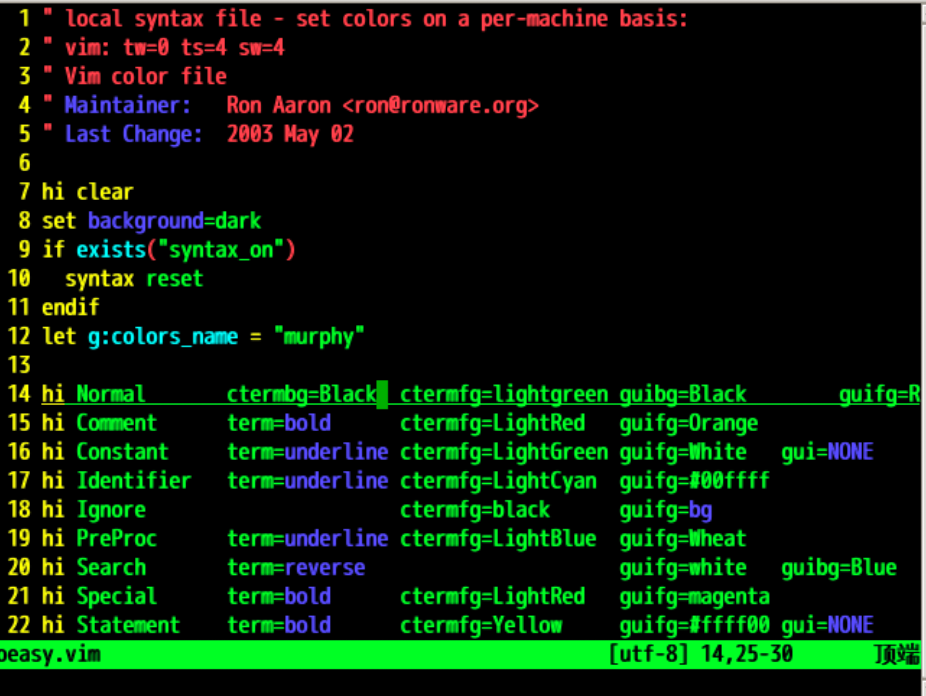
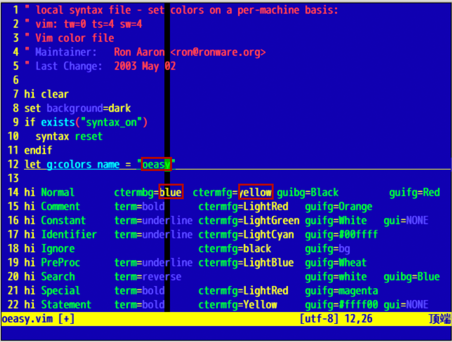
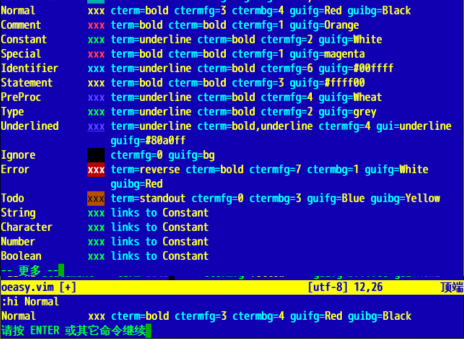
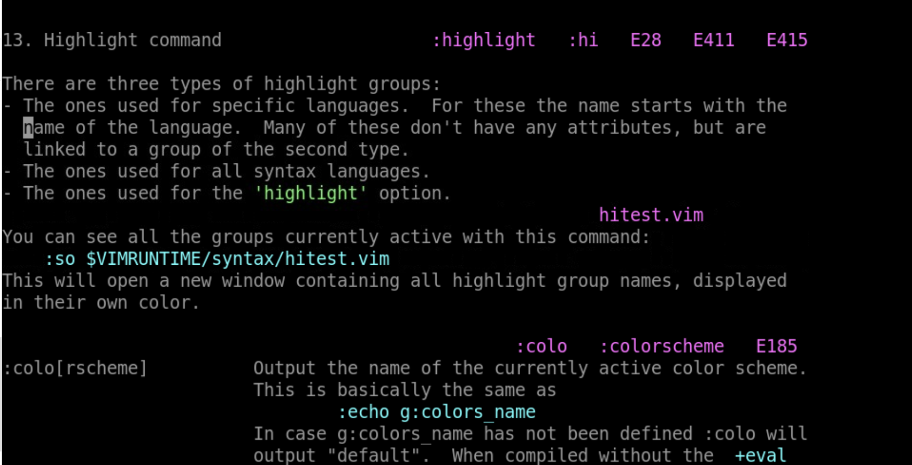
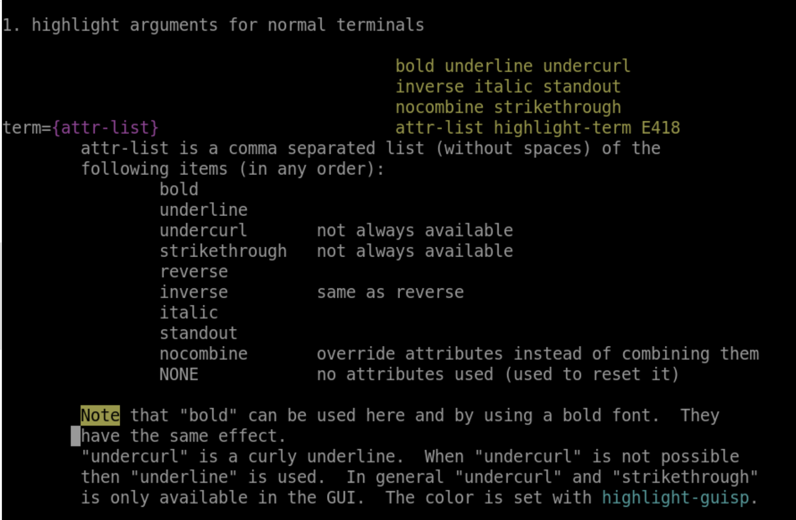
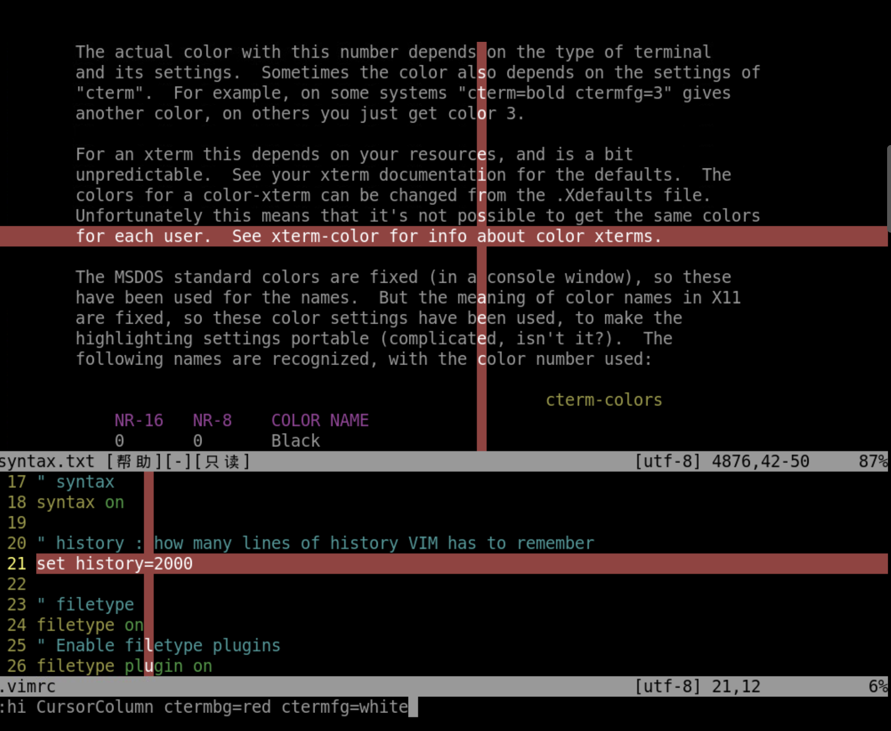
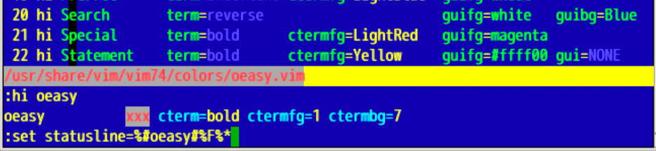

自定颜色
回忆上节课内容🤔
- 这次我们研究了配色方案
- 找到了
colors的位置 - 下载并应用了颜色方案
- 制作了自己的配色方案
- 找到了
- 下面我想修改配色方案的颜色🤔
- 是否能成功？？？
首先得有自己的颜色方案

#找到colors的位置
cd /usr/share/vim/vim81/colors
#列出所有配色方案
ls
#复制出自己的配色方案
sudo cp murphy.vim oeasy.vim
#查看配色方案信息
sudo vi oeasy.vim
修改配色方案

- 前 5 行是注释
- 第 7 行取消原来的配色
- 第 8 行设置背景
- 第 9-11 行重设语法高亮
- 第 12 行命名此配色方案，可以修改为
oeasy - 第 14 行开始设置各种高亮组的颜色
- 我们先修改第一个高亮组
Normal Normal的意思是一般文字- 这类的文字都属于这个高亮组
- 与此类似的还有
- 注释
Comment - 常量
Constant等
- 注释
改变 Normal 高亮组颜色
- 首先把配色方案名称改为
oeasy - 找到
Normal组 - 把
Normal组的背景色ctermbg改为blue - 把
Normal组的前景色ctermfg改为yellow :w保存配色文件colorscheme oeasy重新设定配色文件

查看配色
:hi Normal可以查看Normal组的配色:hi可以查看当前色彩方案所有的配色xxx就是效果预览

配色细节
hi是highlight的缩写:h hi可以查询帮助

字体特征
:hi StatusLine:hi StatusLine cterm=bold:hi StatusLine cterm=bold,italic:hi StatusLine cterm=bold,italic:hi StatusLine cterm=bold,italic,underline:hi StatusLine

term- 意思是
terminal - 效果之间可以加逗号
- 对应黑白终端
-
在此无效
-
cterm - bold 加粗
- underline 下划线
- italic 倾斜
- NONE 取消任何效果
设置颜色
hi StatusLinehi StatusLine ctermfg=red ctermbg=blue-
hi StatusLine -
ctermfg- 意思是
colorterminalforegroundcolor - 前景色设置
- ctermfg=white
- 意思是
-
ctermbg- 意思是
colorterminalbackgroundcolor - 背景色设置
- ctermfg=red
- 意思是
-
gui相关的属性呢- 与
gui相关 - 当前终端中无效果
- 与
-
颜色对应的色号是来自系统的ansi对应的颜色值
定义光标所在行的颜色效果
- 设置光标行高亮显示
:set cursorline:h 'cursorline':hi CursorLine:hi CursorLine ctermbg=red ctermfg=white:hi CursorLine- 随着光标的运动，CursorLine 也会移动
定义光标所在列的颜色效果
- 设置光标行高亮显示
:set cursorcolumn:h 'cursorcolumn':hi CursorColumn:hi CursorColumn ctermbg=red ctermfg=white:hi CursorColumn- 随着光标的运动，CursorColumn 也会移动
- 如果有换行问题的话
:set nowrap

自定义颜色名
- 定义
oeasy组:hi oeasy ctermbg=white ctermfg=red
- 查看
oeasy组:hi oeasy
- 应用
oeasy组:set statusline=%#oeasy#%F%*

配置文件
set statusline=%-040.40(%F%m%)%-030.30([%l,%c]%)%p%%set laststatus=2set rulerset numberset showcmdset nocompatibleset showcmdset showmodeset history=100set t_Co=256colorscheme blueset cursorlinehi CursorLine ctermbg=red ctermfg=whiteset cursorcolumnhi CursorColumn ctermbg=red ctermfg=white
总结
- 我们这次深入了配色方案
- 修改了方案中的具体配色
- 建立了自己的配色
- 应用了自己的配色
- 配置里面还有什么好玩的吗？🤔
- 用来用去就是红绿蓝
- 可以有更多颜色吗？
- 下次再说 👋